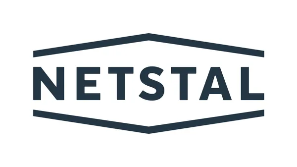

If a Nestal IMM faults out for the above fault the machine will require the reinstallation of internal backup program. To do this follow the onscreen instructions as follows

1. Select "System Termination" from the pop-up box options. Wait until termination is complete before powering down IMM
2. Allow HMI powe lights (below keyboard) to go off before switching IMM back on
3. NIS Main Menu appers on HMI on startup
4. Find the SPV card and switch this to "Install". To do this there is a physical switch on the SPV card
5. Software download from storage
6. Switch SPV card back to "Run"
7. Machine goes into Alarm Interlock -power down again to clear
8. Ejector stroke learning and injector stroke learning required on startup